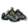
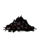

值得注意的是，该咖啡与《饥荒》海难DLC中的咖啡为不同的物品
咖啡果可以作为种子栽种于农田土壤，使其长出咖啡植株
咖啡果可以放置在 特定地皮 上 晾晒（必须以掉落物形式放置在特定地皮上才能进入晾晒状态）
| 可晾晒地皮 | 效率加成 |
|---|---|
| 木质地板 | +0%（不提供加成） |
| 远古系列地皮 | +5% |
| 黄金地板 | +5% |
| 砖地板/卵石地板 | +5% |
| 棋盘地板 | +8% |
| 马赛克地板 | +8% |
| 牛毛地毯/茂盛地毯 | +12% |
| 沙漠地皮 | +16% |
| 龙鳞地板 | +50% |
在晾晒长达 2天（大约16分钟）后变为 咖啡豆
类似于玩家，咖啡果自身具有温度，其温度的变化规律与玩家温度类似。
晾晒期间根据自身温度加快累积晾晒时长，温度加成取正数
晾晒期间若进入潮湿状态将停止累积晾晒时长，直到解除潮湿
晾晒地皮 和 自身温度 晾晒效率加成互为加算
(例如，使用龙鳞地板+自身温度到达77℃的情况下能够获得50%+38.5%=88.5%的晾晒效率加成)
燃尽 或 直接热源 烹饪后变为 鼻青脸肿的烤咖啡豆
可作为食材放入锅中烹饪，提供1水果度+0.5蔬菜度
- 烹饪 美式咖啡
 需要至少1个咖啡果
需要至少1个咖啡果
咖啡果

食用后：
 +3.4
+3.4  +3
+3  +2
+2
保质期：7天（大约56分钟）
堆叠上限：40
漂浮：是
腐烂产物： 
物品id：hina_coffeefruit
通过晾晒咖啡果获得
无法在火源上直接烹饪
可作为食材放入锅中烹饪，提供1蔬菜度
- 烹饪 美式咖啡 需要至少1个咖啡豆
- 烹饪 拿铁咖啡
 需要至少1个咖啡豆
需要至少1个咖啡豆 - 烹饪 黄油咖啡
 需要至少1个咖啡豆
需要至少1个咖啡豆
咖啡豆

食用后：
+2 +10 +0
保质期：23天（大约184分钟）
堆叠上限：40
漂浮：是
腐烂产物：
物品id：hina_coffeebean
通过火源烹饪咖啡果获得
鼻青脸肿的烤咖啡豆既是食物又是肥料，能够提供1堆肥
能够部署到田地当中为地块增加营养
能够使枯萎作物恢复收获次数，重新生长
可作为食材放入锅中烹饪，提供0.5蔬菜度
鼻青脸肿的烤咖啡豆

食用后：
 +3.4
+3.4  -2
-2  +0
+0
堆叠上限：40
燃料值：15秒
漂浮：是
物品id：hina_coffeebean_cooked